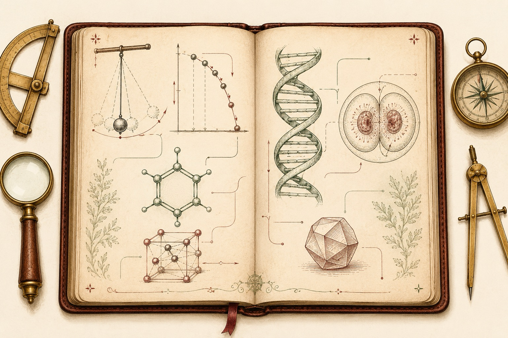

A Field Guide
NEET
Physics, Chemistry & Biology — rediscovered from first principles
One real question paper, taken apart and rebuilt into the ideas behind it. Not 180 answers to memorise — a handful of questions followed all the way down to why the answer must be so.

A warm, scholarly cover illustration in the style of an 18th-century naturalist's field notebook: an open leather journal on aged parchment, its two pages filled with elegant hand-drawn sketches that blend the three sciences — a swinging pendulum and a parabola of a falling ball, a benzene ring and a cubic crystal lattice, a DNA double helix and a dividing cell — connected by fine ink annotation lines. Oxblood-red and forest-green ink accents on cream paper, brass instruments in the margins, generous whitespace, no legible text. Flat editorial vector illustration, ~1200×800px, 3:2 landscape; keep the subject centred with safe margins.
Generate this with your image agent, then drop the file here.
Contents
The Route
Six chapters and a cheatsheet. Each chapter takes a cluster of real questions from the paper and asks the same thing an examiner secretly asks: do you understand the idea well enough to rebuild the answer?
- IThe NEET Maphow the exam is built
- IIMotion, Forces & Falling BodiesPhysics · interactive
- IIIFields, Waves & the QuantumPhysics · interactive
- IVMoles, Crystals & CarbonChemistry · 3D
- VThe Cell & Its CodeBiology
- VIThe Body, Heredity & the Living WorldBiology
- ✦The Cheatsheetformulas & facts
Turn pages with ← → (or the buttons below). Drag the 3D crystal with your mouse; nudge the sliders under the interactive figures. Every worked question shows the exam options with the correct one marked, then the reasoning.
Source paper: a 180-question NEET booklet (code G1 “KANHA”) — 45 Physics, 45 Chemistry, 90 Biology, three hours, +4 per correct answer and −1 per wrong one. Worked answers here are the author's own, checked against standard references.